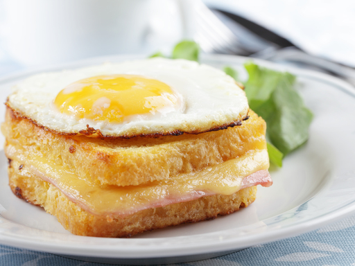

<ion-view title="hasard">


  <div class="bar bar-header bar-vert">
    <h1 class="title">TASTE!T</h1>
    <button class="button button-icon ion-plus" ui-sref="add-recipe"></button>
  </div>

      <ion-content>

        <h1 class="verdatre">{Recette au Hasard}</h1>

        

        <p class="titre-gauche">{ Titre détaillé } <br><br>

          <u class="green">Difficulté</u> : <strong>{ diff }</strong>
        </p>

          
        <strong>{ nb } votes</strong>

        <div style="text-align:center;">
          <button class="button voir-recette">
            Commentaires ( {nb } )
          </button><!-- Peut être optionnel -->
        </div>

        <div class="hr-gauche"></div>
        <p class="ou">ou</p>
        <div class="hr-droite"></div>


        
        <div style="text-align:center;">
          <button class="button relancer">
            Relancer les dés
          </button>
        </div>

      </ion-content>


      <!-- NE PAS TOUCHER LE MENU CI-DESSOUS -->

      <div class="tabs tabs-icon-top">
        <a class="tab-item" ui-sref="rech">
          <i class="icon ion-ios-search"></i>
          Recherche
        </a>
        <a class="tab-item" ui-sref="liste">
          <i class="icon ion-ios-nutrition"></i>
          Recettes
        </a>
        <a class="tab-item" ui-sref="home">
          <i class="icon ion-ios-home"></i>
          Accueil
        </a>
        <a class="tab-item" ui-sref="tend">
          <i class="icon ion-ios-star"></i>
          Tendances
        </a>
        <a class="tab-item" ui-sref="contact">
          <i class="icon ion-ios-email"></i>
          Contact
        </a>

      </div>


</ion-view>